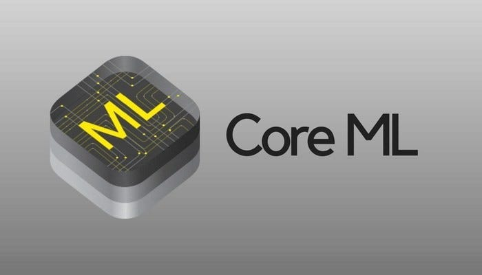

 Real-time object detection with CoreML is trickier than you think.
Usually, you have two choices to build a machine learning app for your mobile device, inference can happen either directly on-device or on cloud-based servers. It all depends on your usage scenario, there is no one-size fit all solution. In this article, we will only focus on on-device inference.
At WWDC 2017 Apple released first Core ML. Core ML is Apple’s machine learning framework for doing on-device inference. Core ML is not the only way to do on-device inference, there are tens of libraries and frameworks that are compatible with iOS, but that’s beyond the scope of this article. From the YOLOv7 official repository, we can get the export script to convert trained PyTorch model to Core ML format effortlessly. However, keep one thing in mind, YOLOv7 is a popular open source project, new changes and updates are added very quickly. I’m also very glad to send a PR to improve the export script last night due to this writing 😃.After you got the exported Core ML models, no kidding, you have tons of things in your todo list. Matthijs Hollemans has already written an insightful article in his blog, be sure to checkout and support his efforts! Here is my short list:
- Configure your Core ML model in a particular way. You can either append NMS to your model or write a lot of additional Swift code. IMHO, this is the most difficult part if you know nothing about the object detection model.
- Specify camera resolution, don’t simply select the highest resolution available if your app doesn’t require it.
- Resize or crop your input image to fit network input dimension, it depends on your application.
- Feed modified images to your model in a correct orientation.
- Fix Vision’s weird orin.
- Convert bounding boxes coordinate system for display. This is also a trickier part, you need some iOS development experiences and a pencil for calculation 😎.
According to Hollemans’s article, there are at least 5 different coordinate systems you need to take care, not to mention how to handle real-time capturing correctly and efficiently is also non-trivial. You can follow these two articles to learn how to create a custom camera view.
Apple Developer Documentation | Recognizing Objects in Live Capture
Creating a Custom Camera View | CodePath iOS Cliffnotes
At the latest WWDC 2022, Apple introduced even more performance tools to its CoreML toolchain, now you can check your model’s metadata via performance reports and Core ML Instrument without writing any code. You can also use computeUnits = .cpuAndNeuralEngine if you don’t want to use the GPU but always force the model to run on the CPU and ANE if available.
 Prefer CPU and ANE instead of GPU.
Prefer CPU and ANE instead of GPU.
You can learn more about ANE from the following repository, thank you again Hollemans.
GitHub - hollance/neural-engine: Everything we actually know about the Apple Neural Engine (ANE)
Here are snapshots from my model’s performance reports.
 You can evaluate your model via drag-and-drop image files.
You can evaluate your model via drag-and-drop image files.
There is no significant inference speed differences among quantization models, but the model size only about half the size. It’s a good thing for your mobile applications.

 No inference speed improved. (Left is FP32, right is FP16)
No inference speed improved. (Left is FP32, right is FP16)

 Half the size of the FP32 model.
Half the size of the FP32 model.
Finally, you have a working YOLOv7 Core ML model on the iOS devices, be careful of the heat🔥. Happy coding!
 Yolov7-tiny on iPad Mini 6. Copyrights of BBIBBI Dance Practice belongs Kakao Entertainment.
Yolov7-tiny on iPad Mini 6. Copyrights of BBIBBI Dance Practice belongs Kakao Entertainment.